The post-finance operating system for mobile recovery.
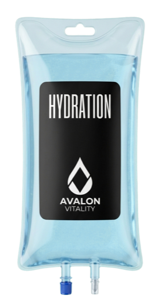
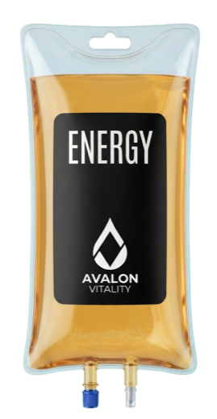
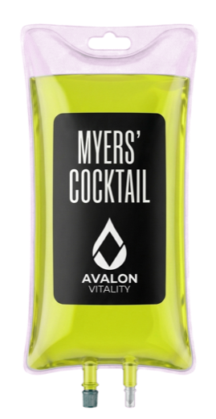
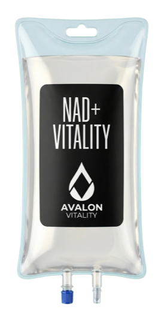
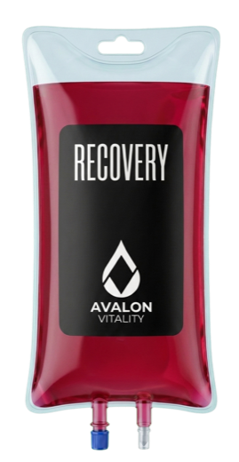
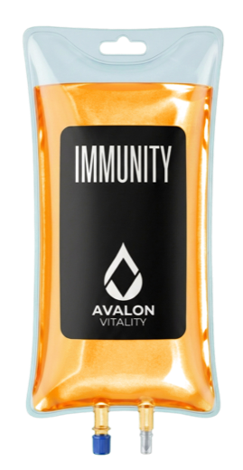
Post QuickBooks, Mercury, and Gusto, Avalon becomes one connected system: customers book in 60 seconds or less, nurses deliver care, admin sees the whole clinic, and the money, books, banking, and payroll reconcile behind the scenes.
The front end educates, prices, books, collects deposits, and captures the client. The backend schedules, charts, messages, charges, follows up, reconciles, and pays. The site is not a brochure; it is the operating surface for the clinic.
Most mobile recovery brands stop at a pretty website and a manual back office. Avalon connects the customer experience to the operational backend and the finance layer, so every booking becomes structured data, every visit becomes a record, and every dollar knows where to go.
Menu, pricing, education, membership, booking, deposits, saved cards, and a 60-second-or-less checkout that no other mobile recovery service has.
Acuity, Attio, Stripe, Quo, and Resend coordinate EMR, CRM, dollars, text/call, and email so the visit moves cleanly from booking to follow-up.
QuickBooks, Mercury, and Gusto turn completed visits into books, banking, reconciliation, payroll, and admin visibility.
Marketing, events, partnerships, venues, and growth encoded around the service so a city launch is repeatable, trackable, and teachable.
Together: a clinic-in-a-browser.
The public site does the first half of the work: explain the therapies, make the menu legible, show plans, collect details, save payment, and convert a visitor into a scheduled patient.
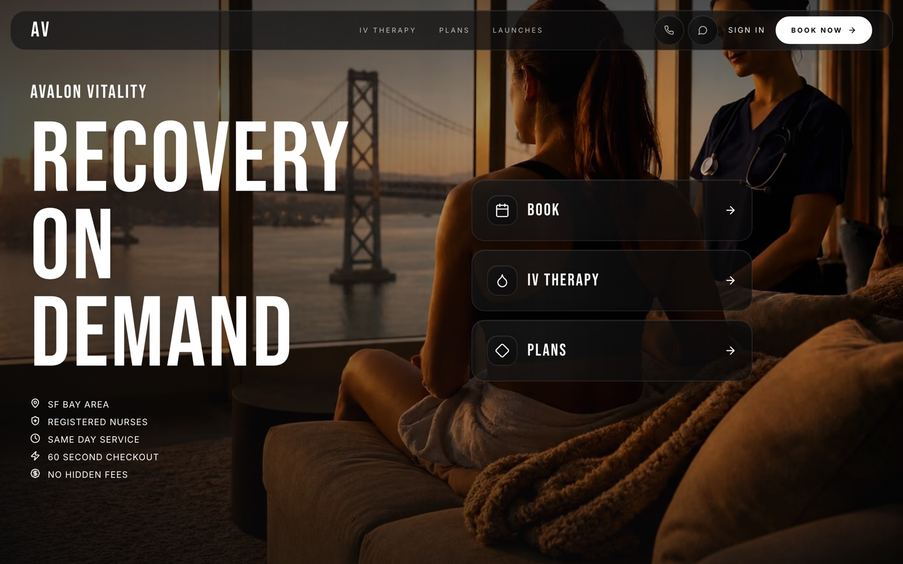
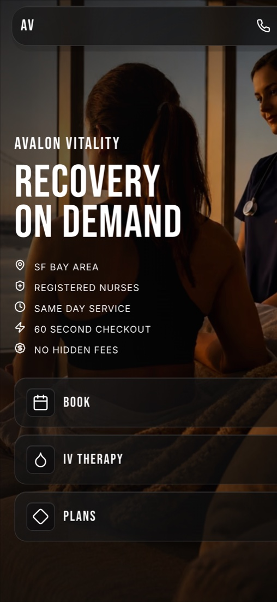
The front end is built for one outcome: landing to booked in 60 seconds or less.
Five taps, start to finish — a 60-second-or-less checkout no other mobile recovery service has. It turns the website from marketing into transaction infrastructure.
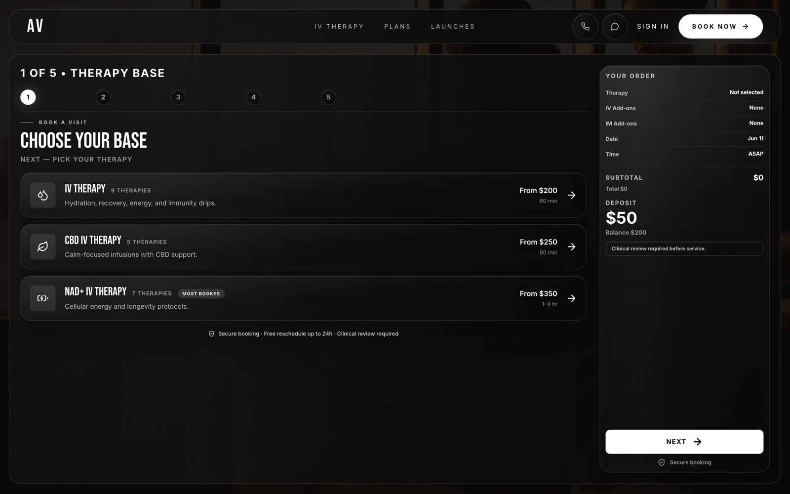
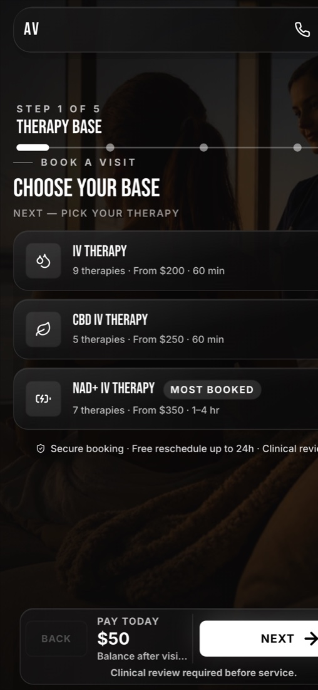
IV, NAD+, or CBD.
Vitamin & IM shots.
Live availability.
Home, hotel, office.
$50 locks it in.
Every IV, NAD+ dose, CBD therapy, boost, IM shot, price, membership discount, and deposit rule becomes something the backend can schedule, charge, track, and report on.
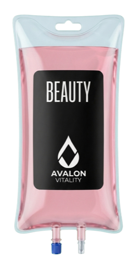
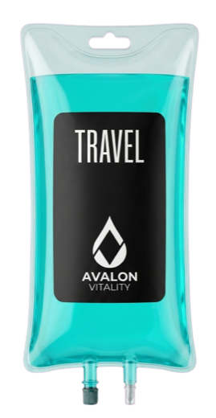
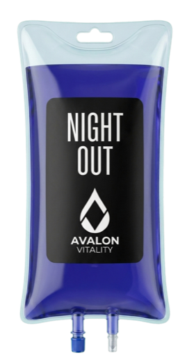
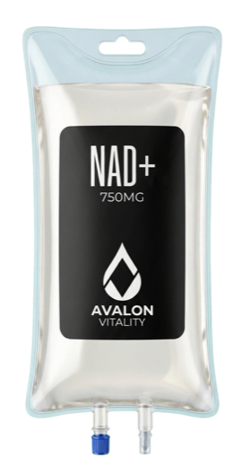
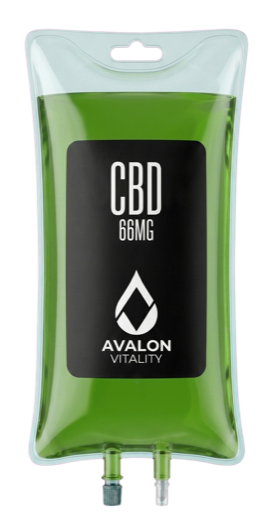
Hydration · Energy · Immunity · Beauty · Myers' · Recovery · Travel · Post-Night-Out · NAD+ · CBD — customer-facing catalog, backend-ready data.
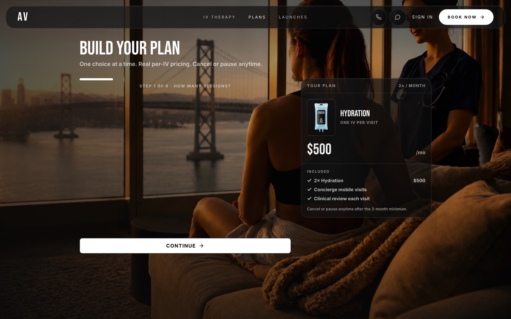
Stripe collects the deposit and carries the balance into the visit workflow.
Saved payment makes the checkout fast and gives admin a clean path to settle the visit.
Plans connect repeat customers to pricing, future visits, revenue visibility, and retention.
After the finance integrations, one completed booking can move through the whole business: patient record, CRM record, payment, message history, receipt, bank activity, bookkeeping, and payroll.
The first two users become fully served: clients get a fast, premium booking experience; admin gets the operating and finance truth in one flow.
The point is not the logo list. The point is the handoff: front end to clinical backend to CRM to payment to finance.
Post integration, the stack is not a collection of apps. It is a front-to-back operating system for clients and admin.
The value is not just code volume. It is that the site, backend, and finance tools create a measurable operating loop.
A customer can go from interest to booked in 60 seconds or less.
Site · Acuity · Attio · Stripe · Quo · Resend · Mercury · QuickBooks · Gusto.
Clients get the premium front end. Admin gets the operational and finance backend.
Booking, charting, payment, banking, books, and payroll connected.
The site removes friction from the buying moment and captures clean demand.
The backend removes friction after the visit and turns activity into business control.
Best-estimate value for the built site, backend workflows, integrations, creative system, and IP already in place. Range: $0.75M-$1.5M.
Best-estimate value once QuickBooks, Mercury & Gusto connect the operating backend to banking, books, reconciliation, and payroll. Range: $3M-$6M.
Estimated on replacement cost, working IP, operational leverage, and early-stage platform value.
Once the site and finance loop are connected, San Francisco becomes the operating template: front end, backend, finance stack, playbook, marketing, events, partnerships, venues, and growth all captured in one repeatable system.
Configuration, not construction.
Launch a city in a day, not a quarter.
Avalon is not just making a nicer booking page. It is turning the website into the front door, the backend into the clinic brain, and the finance stack into the system of record.